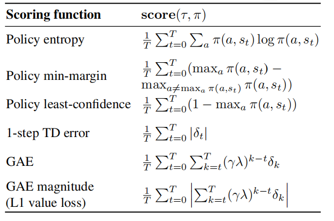
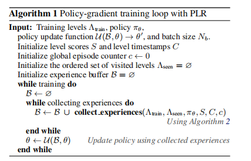
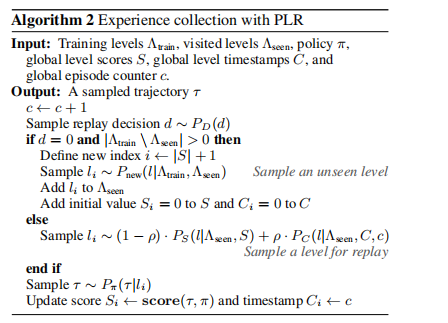
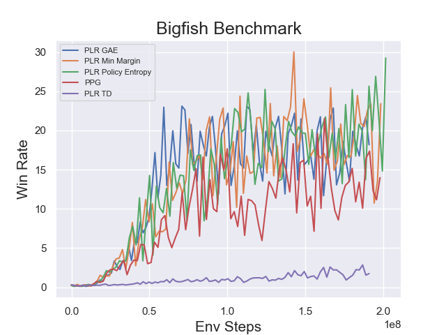

PLR¶
Overview¶
PLR was proposed in Prioritized Level Replay. PLR is a method for sampling training levels that exploits the differences in learning potential among levels to improve both sample efficiency and generalization.
Quick Facts¶
PLR supports the multi-level environments.
PLR updates policy and level score at the same time.
In the implementation of DI-engine, PLR is combined with PPG algorithm.
PLR supports Policy entropy, Policy min-margin, Policy least-confidence, 1-step TD error and GAE score function.
Key Graphs¶
Game levels are determined by a random seed and can vary in navigational layout, visual appearance, and starting positions of entities. PLR selectively samples the next training level based on an estimated learning potential of replaying each level anew. The next level is either sampled from a distribution with support over unseen levels (top), which could be the environment’s (perhaps implicit) full training-level distribution, or alternatively, sampled from the replay distribution, which prioritizes levels based on future learning potential (bottom).

Key Equations¶
The Scoring Levels for Learning Potential is:
{kind=link}
Given level scores, we use normalized outputs of a prioritization function \(h\) evaluated over these scores and tuned using a temperature parameter \(\beta\) to define the score-prioritized distribution \(P_{S}\left(\Lambda_{\text {train }}\right)\) over the training levels, under which
where \(\operatorname{rank}\left(S_{i}\right)\) is the rank of level score \(S_{i}\) among all scores sorted in descending order.
As the scores used to parameterize \(P_{S}\) are a function of the state of the policy at the time the associated level was last played, they come to reflect a gradually more off-policy measure the longer they remain without an update through replay. We mitigate this drift towards “off-policy-ness” by explicitly mixing the sampling distribution with a staleness prioritized distribution \(P_{C}\) :
Pseudo-code¶
Policy-gradient training loop with PLR
Experience collection with PLR
Benchmark¶
environment |
evaluation results |
config link |
|---|---|---|
BigFish
|
 |
References¶
Minqi Jiang, Edward Grefenstette, Tim Rocktaschel: “Prioritized Level Replay”, 2021; arXiv:2010.03934.
Other Public Implementations¶
[facebookresearch](https://github.com/facebookresearch/level-replay)